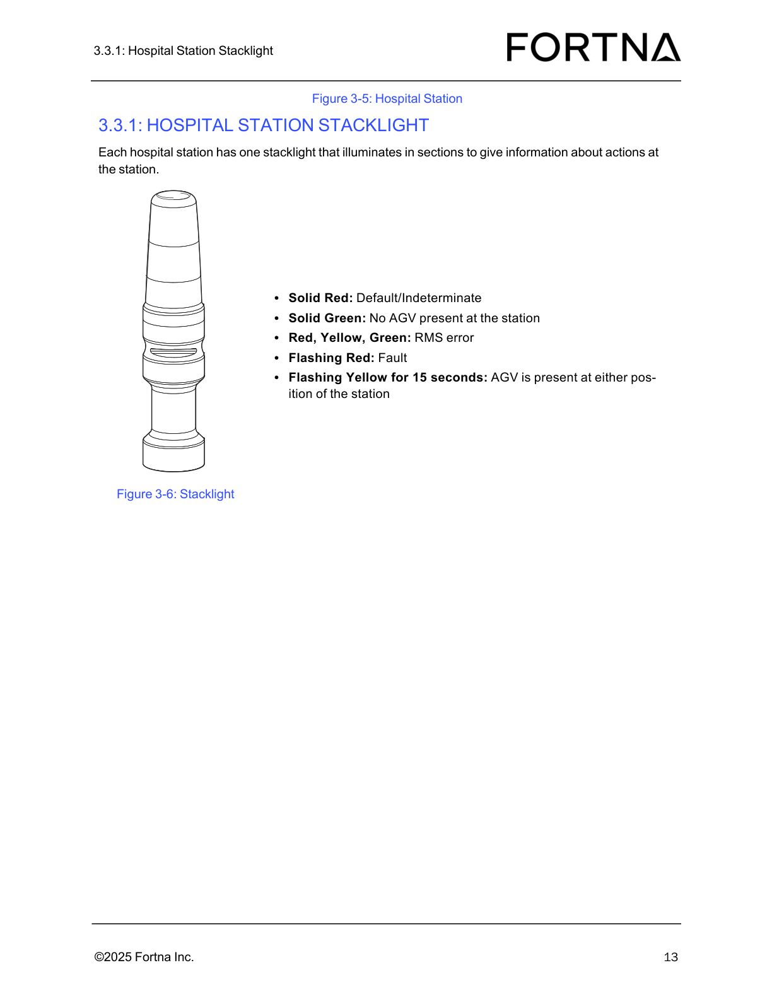

| Procedure ID | proc_interpret_hospital_station_stacklight_states_solid_flashing_colors_v1 |
|---|---|
| Title | Interpret Hospital Station Stacklight States (Solid/Flashing Colors) |
| Procedure Type | diagnostic |
| Primary Role | operator |
| Support Safe | Yes |
| Capability Tags | agv_active_errors |
| Access Surface | hospital_hmi |
| Audience Roles | operator |
| Failure Pattern Tags | None |
| Validation Status | needs_sme_review |
| Merge Status | source_finalized |
Use the hospital station stacklight color and flashing pattern to determine the current station condition: Default/Indeterminate, No AGV present, RMS error, Fault, or AGV present (flashing yellow for 15 seconds).
When you need to identify the current hospital station condition by observing the station stacklight (solid vs flashing colors).

Responsible role: operator
Instruction:
Locate the hospital station’s stacklight (each hospital station has one stacklight).
Expected result:
You can visually see the hospital station stacklight that illuminates in sections.
Responsible role: operator
Instruction:
Observe the stacklight indication and note whether it is solid or flashing.
Expected result:
You have identified the stacklight pattern as solid or flashing (and which colors are lit).
Responsible role: operator
Instruction:
If the stacklight is Solid Red, record the state as Default/Indeterminate.
Expected result:
Recorded station condition = Default/Indeterminate when Solid Red is observed.
Responsible role: operator
Instruction:
If the stacklight is Solid Green, record the state as No AGV present at the station.
Expected result:
Recorded station condition = No AGV present at the station when Solid Green is observed.
Responsible role: operator
Instruction:
If the stacklight shows Red, Yellow, and Green simultaneously, record the state as RMS error.
Expected result:
Recorded station condition = RMS error when Red+Yellow+Green are simultaneously lit.
Responsible role: operator
Instruction:
If the stacklight is Flashing Red, record the state as Fault.
Expected result:
Recorded station condition = Fault when Flashing Red is observed.
Responsible role: operator
Instruction:
If the stacklight is Flashing Yellow, confirm it lasts for 15 seconds, then record the state as AGV is present at either position of the station.
Expected result:
Recorded station condition = AGV is present at either position of the station when Flashing Yellow persists for 15 seconds.